| How a room is drawn |
Atic Atac draws a room once, when the player comes in, and from then on touches only what moves. A room is a flood of colour and a vector outline; its doors and furniture are wide pictures drawn once in any of eight orientations, with their colours repainted every pass; and the player, the creatures and the objects are sixteen-pixel sprites XORed onto the screen, each erased where it was and drawn where it is, a row at a time. This page follows a room being entered, stage by stage, through the game's own code in SkoolKit's simulator, then one step of the player, and ends with where the time goes.
Room room $00, where every game starts: a red square hall (shape $00) with doors in three walls, the A.C.G. door in the fourth, and eight pieces of furniture. Nothing was staged. A game was started from the title screen with the knight, as the build starts one; the knight walked down through the south door into room room $07 (37 frames holding E), waited 20 frames there, and walked back up (R) until the door's handler, DOOR, found him in its box and called ENTER_ROOM. The screen at that moment, still showing the room he is leaving:
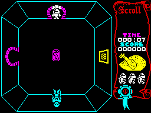
Room $07 as ENTER_ROOM is called: the knight in the doorway at the top.
ENTER_ROOM swaps to the door's far half, which gives the new room and where the player appears (see the doors), then falls into ARRIVE_IN_ROOM: mark the room seen (MARK_ROOM_VISITED), blank the play area (CLEAR_PLAY_AREA: the 24 left-hand columns, all 192 lines; the scroll is left alone), draw the room (DRAW_ROOM), colour the scroll (PAINT_PANEL), redraw the inventory (DRAW_INVENTORY) and start the new-room sound (PLAY_SOUND_NEW_ROOM).
DRAW_ROOM reads the room's two bytes in ROOM_TABLE, a colour and a shape. It fills all 576 attribute cells of the play area with the colour -- after which the screen still looks black, since there are no pixels in them yet -- and copies the shape's walk limits from ROOM_SHAPES to ROOM_HALF_WIDTH and ROOM_HALF_HEIGHT, which is all collision knows of the room's shape. Then DRAW_OUTLINE walks the shape's edge list and DRAW_LINE joins its corners a pixel at a time, ORing into the screen (every shape is drawn on the room types page). After the outline the scroll still wears the old room's colours, until PAINT_PANEL:
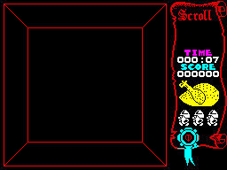
After DRAW_ROOM: the outline, in the room's red. The scroll is still coloured for the room just left.
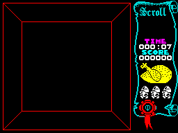
After PAINT_PANEL: the scroll recoloured to match.
DRAW_ROOM also clears ROOM_DRAWN, and on a pass with it clear MAIN_LOOP skips the objects and monsters and goes straight to the room's list in ROOM_CONTENTS. Each entry names a sixteen-byte door or furniture record by its half in this room; DISPATCH_FROM_LIST dispatches it to its type's handler, and every handler ends in DRAW_DOOR, which draws the colours and, because ROOM_DRAWN is clear, the pixels too (DRAW_RECORD). Room $00's list has 12 entries; the screen after each, cut to what it changed (the two south and west doors are timed doors, open at the time):
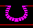
1. timed door, open, mode 4 (south wall)
2. timed door, open, mode 7 (west wall)
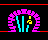
3. cyan door, mode 0 (north wall)
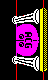
4. A.C.G. door, mode 2
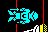
5. suit of armour, mode 3
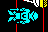
6. suit of armour, mode 3
7. pumpkin picture, mode 0
8. ghost picture, mode 0
9. A.C.G. shield, mode 4
10. wall antlers, mode 4
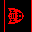
11. wall shield, mode 7
12. wall trophy, mode 7
| Record | Mode | Handler | T-states | |
|---|---|---|---|---|
| 1 | timed door, open ($21) | 4 | TIMED_DOOR_OPEN | 12,020 |
| 2 | timed door, open ($21) | 7 | TIMED_DOOR_OPEN | 106,094 |
| 3 | cyan door ($0A) | 0 | DOOR_LOCKED_A | 9,550 |
| 4 | A.C.G. door ($24) | 2 | ACG_DOOR | 342,086 |
| 5 | suit of armour ($1E) | 3 | DRAW_DOOR | 69,997 |
| 6 | suit of armour ($1E) | 3 | DRAW_DOOR | 69,978 |
| 7 | pumpkin picture ($25) | 0 | DRAW_DOOR | 6,421 |
| 8 | ghost picture ($11) | 0 | DRAW_DOOR | 9,018 |
| 9 | A.C.G. shield ($1C) | 4 | DRAW_DOOR | 8,374 |
| 10 | wall antlers ($15) | 4 | DRAW_DOOR | 8,749 |
| 11 | wall shield ($1D) | 7 | DRAW_DOOR | 37,332 |
| 12 | wall trophy ($16) | 7 | DRAW_DOOR | 38,525 |
The dearest was the A.C.G. door in mode 2, at 342,086 T-states, where the cyan door in the north wall, mode 0, took 9,550. The A.C.G. door is the biggest graphic in the room and drawn in a turned mode, which costs most (below).
At the end of that first pass DRAW_ROOM_CONTENTS draws every object and monster whose room byte is this room, once, with DRAW_THING -- here only the knight himself, in the doorway -- and the loop sets ROOM_DRAWN. From the second pass on, the loop dispatches the objects and monsters again, each handler redrawing its own sprite when it moves, and the room list's handlers repaint only their colours. The room at the end of that first pass, and after the 16 frames in which the knight walks himself in (the arrival walk, on the doors page):
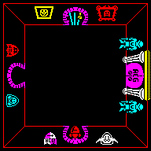
The first pass done: the room complete, the knight on the south door.
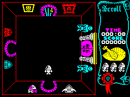
The arrival walk done.
From the door to the second pass took 1,557,478 T-states -- 22.3 frames, 0.44 of a second -- in which nothing else moved:
| Stage | T-states | Share |
|---|---|---|
| ENTER_ROOM and MARK_ROOM_VISITED: the far side of the door, the new position and heading, the room's bit in ROOMS_SEEN | 590 | 0% |
| CLEAR_PLAY_AREA: 24 columns by 192 lines of zeros | 136,472 | 9% |
| DRAW_ROOM: the room's colour into 24 × 24 attributes | 16,927 | 1% |
| DRAW_ROOM: the outline (DRAW_OUTLINE, DRAW_LINE, a pixel at a time) | 620,690 | 40% |
| PAINT_PANEL: the scroll's colours | 11,011 | 1% |
| DRAW_INVENTORY: the three carried things | 26,136 | 2% |
| The first pass: the 12 doors and pieces of furniture in the room's list | 718,144 | 46% |
| The first pass: DRAW_ROOM_CONTENTS | 26,857 | 2% |
| The rest: the new-room sound, the loop, the end of the pass | 651 | 0% |
| From the door to the second pass | 1,557,478 | 100% |
The outline is the dearest part: every pixel of it is placed by a line stepper whose slope comes from a shift-and-subtract division (DIVIDE_SLOPE), and a square hall's outline is long.
A door or piece of furniture is stored once, the right way up, and its +$05 byte says how to lay it down: the top three bits are a mode, 0-7, that picks one routine from PIXEL_DRAWERS for the pixels and one from COLOUR_DRAWERS for the colours; bits 1-0 pick how the pixels meet the screen, written into each drawer's loop by SPRITE_COMBINE_OPCODE (0 store, 1 OR, 2 or 3 XOR). Below, two graphics -- the suit of armour, which is symmetrical neither way, and a door -- each drawn in all eight modes by the game's own DRAW_SPRITE_PIXELS and DRAW_SPRITE_COLOURS on a blank screen, modes 0 to 7 left to right:
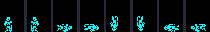
The suit of armour, modes 0-7.
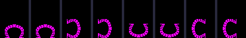
A door, modes 0-7.
Each drawn picture was then compared, pixel for pixel, with the stored picture put through each of the eight symmetries of a rectangle (by the Python imaging library), which gives the fifth column; the last two count the door and furniture halves in the castle's template drawn in each mode:
| Mode | +$05 | Pixels | Colours | The picture, as drawn | Door halves | Furniture halves |
|---|---|---|---|---|---|---|
| 0 | $00 | BLIT_SPRITE | COLOURS_AS_STORED | as stored | 110 | 65 |
| 1 | $20 | BLIT_SPRITE_MIRRORED | COLOURS_MIRRORED | mirrored left to right | 0 | 0 |
| 2 | $40 | DRAW_TURNED_RIGHT | COLOURS_TURNED_RIGHT | turned a quarter clockwise | 2 | 12 |
| 3 | $60 | DRAW_FLIP_ANTIDIAGONAL | COLOURS_FLIP_ANTIDIAGONAL | reflected in the other diagonal (bottom-left to top-right) | 93 | 15 |
| 4 | $80 | DRAW_UPSIDE_DOWN | COLOURS_UPSIDE_DOWN | upside down | 97 | 30 |
| 5 | $A0 | BLIT_SPRITE_FLIPPED | COLOURS_HALF_TURN | turned a half turn | 3 | 0 |
| 6 | $C0 | DRAW_FLIP_DIAGONAL | COLOURS_FLIP_DIAGONAL | reflected in the leading diagonal (top-left to bottom-right) | 0 | 0 |
| 7 | $E0 | DRAW_TURNED_LEFT | COLOURS_TURNED_LEFT | turned a quarter anticlockwise | 94 | 27 |
Mirroring costs the copy loop a DEC DE for an INC DE and a trip through REVERSE_BITS for each byte; turning upside down, one call to START_AT_LAST_ROW first; the four modes that turn or reflect in a diagonal build each screen byte from one bit of eight rows, which is why they are slower. A door's mode is its wall -- the picture of a door in the north wall, turned, serves the other three -- and bit 6, set for the four diagonal modes, is also what PLAYER_AT_DOOR reads as “in a side wall”. The labels of modes 3 and 6 follow the drawers' loops, not the geometry: DRAW_FLIP_ANTIDIAGONAL reflects in the diagonal from bottom-left to top-right, and DRAW_FLIP_DIAGONAL in the one a mathematician would call the transpose. Modes 1 and 6 are in no record of the template.
The colour tables, one per graphic from FURNITURE_COLOURS, are a width and height in cells and a byte per cell, walked in the same order as the pixels. A byte of $00 leaves the cell as it is, $FF writes the room's colour, and anything else is written as it is. Across the 39 tables there are 16 cells of $00, 97 of $FF and 338 of fixed colours; $FF is used by A.C.G. door, cave door, cyan cave door, ghost picture, green cave door, red cave door, skeleton, timed cave door, open, timed cave door, shut, wall shield, yellow cave door. So those take the colour of whatever room they stand in, and the four coloured doors are one graphic with four colour tables. Since the colours are repainted on every pass, a creature that crosses a door leaves it coloured correctly again a moment later.
The player, creatures and objects are drawn another way: sixteen pixels wide, any height, placed at any pixel and XORed on, so that drawing the same thing twice rubs it out. A handler starts with ACTOR_TO_WORKSPACE, which copies the sprite and position into the workspace before the record is moved, and ends by redrawing: REDRAW_MOVED sets up the new picture in one register bank (SETUP_SPRITE_DRAW) and the old in the other (SETUP_ERASE); ALIGN_ROWS deals with the rows the two do not share, and ERASE_DRAW_ROWS does the rest two at a time, swapping banks with EXX: erase a row of the old, draw a row of the new, bottom up.
Followed in the simulator, one instruction at a time: in room $00, the knight walking up and to the right, from ($60, $8A) to ($62, $88), sprite $07 to $07. The 18 rows erased and 18 drawn went: the old picture's rows on lines 138, 137 erased on their own; then 16 pairs, each erasing a row of the old picture and then drawing the new picture's row on the same line, from line 136 up to line 121; then the new picture's rows on lines 120, 119 drawn on their own. So each line of the screen changes once, from old to new, and there is no moment at which the knight is missing. The pixels before, after the rows only the old picture had, halfway, and at the end, four times size: white where a pixel was set before and still is, red where it has been rubbed out, green where it has been drawn:
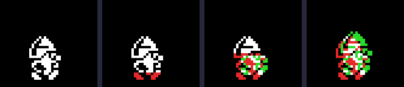
One step, in four moments.
The shift that places the sprite at its pixel costs no loop. Each row's two bytes go into HL and A is cleared; SHIFT_CHAIN is seven copies of ADD HL,HL / ADC A,A, each shifting the three bytes A, H, L one pixel left, and SETUP_SPRITE_DRAW writes the displacement of the JR in front of it so that the jump lands part-way down the chain. Run for each x AND 7 on a copy of the game, it writes:
| x AND 7 | JR displacement | Lands at | Shift | Columns touched |
|---|---|---|---|---|
| 0 | $E8 | DRAW_UNSHIFTED | none | 2 |
| 1 | $00 | SHIFT_CHAIN + 0 | 7 shifts left | 3 |
| 2 | $02 | SHIFT_CHAIN + 2 | 6 shifts left | 3 |
| 3 | $04 | SHIFT_CHAIN + 4 | 5 shifts left | 3 |
| 4 | $06 | SHIFT_CHAIN + 6 | 4 shifts left | 3 |
| 5 | $08 | SHIFT_CHAIN + 8 | 3 shifts left | 3 |
| 6 | $0A | SHIFT_CHAIN + 10 | 2 shifts left | 3 |
| 7 | $0C | SHIFT_CHAIN + 12 | 1 shift left | 3 |
Seven shifts left of three bytes leave the picture one pixel into the first byte, and no shift leaves it on the byte boundary, so the sprite's left edge is at x itself; with no shift only two columns are touched. The erase side has its own chain and its own patched JR (ERASE_SHIFT_CHAIN).
Then the colours. DRAW_FROM_RECORD compares the old and new position to choose one of the fillers in COLOUR_FILLERS; each paints the thing's block of cells -- two columns, three when it is not on a cell boundary, as tall as the sprite -- in its own colour, and the column or row it has just left in the room's (two of the eleven entries, for combinations that cannot happen, point at INERT_SPRITE):
| Index | Movement | Filler |
|---|---|---|
| 0 | still | COLOUR_STILL |
| 1 | moved right | COLOUR_MOVED_RIGHT |
| 2 | moved left | COLOUR_MOVED_LEFT |
| 4 | moved down | COLOUR_MOVED_DOWN |
| 5 | moved down and right | COLOUR_MOVED_DOWN_RIGHT |
| 6 | moved down and left | COLOUR_MOVED_DOWN_LEFT |
| 8 | moved up | COLOUR_MOVED_UP |
| 9 | moved up and right (this step) | COLOUR_MOVED_UP_RIGHT |
| 10 | moved up and left | COLOUR_MOVED_UP_LEFT |
The cells round the knight before and after the same step, lines on the cell boundaries: the white block goes with him and the room's red comes back behind.
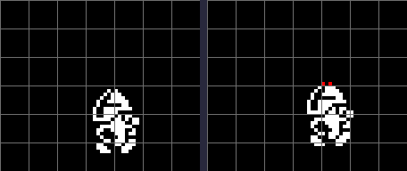
The step's colours, before and after.
One line of the knight is left red, at the top of his helmet. DRAW_FROM_RECORD works the block's height out from the sprite's (its rows over eight, by an RRCA sequence, plus one): the knight's 18 rows make 3 cells, counted up from the cell his bottom line is in. At y 136 his rows run from line 119 to 136, across 4 cells, so the top line is outside the block; the simulator's screen shows 2 of his pixels standing in a cell not painted his colour.
So a creature carries its colour with it and leaves the room's behind; where two things overlap, whichever is painted last colours the shared cells, which is the attribute clash the game lives with. Doors and furniture get their colours back on the next pass.
The status panel is drawn once per game by DRAW_SCROLL: a character set of its own laid out 8 by 24 cells from x 192 (see the graphics). During a game only its contents change -- the clock (TICK_CLOCK), the score (ADD_SCORE), the roast (DRAW_FOOD), the lives (DRAW_LIVES) and the inventory (DRAW_INVENTORY), all on the quest page -- and its colour, which PAINT_PANEL sets on every room change: the room's ink complemented (bright green where that would be black or blue), with fixed bands of magenta, white, cyan and yellow behind the clock and score. Room $07 is cyan, room $00 red:
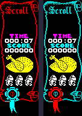
The scroll in room $07 and in room $00.
Once the room is drawn, a pass of MAIN_LOOP handles every object and creature in the room and every big monster wherever it is, and between records calls FRAME_TICK whenever FRAMES has moved, so the player moves once a frame whatever the pass costs. The game was run on from the arrival above for ten seconds of emulated time, the knight walking right, left, left, right, up and down a second each and creatures arriving as they do. Every instruction's T-states were charged to the record being dispatched at the time (IX, read as the dispatcher jumps) and to the labelled routine it is in. 213 passes ran in 502 frames: 164,746 T-states a pass on average (104,550 – 379,675), 2.36 frames, about 21 passes a second. At the end the three creature slots held sprites $5A, $99, $4F.
| For | T-states a pass | Share |
|---|---|---|
| The player's handler: MOVE_PLAYER and the collision tests, the spawner, the drain, the redraw | 56,859 | 35% |
| The three creature slots: movers and redraws, or INERT_SPRITE's delay for an empty one | 34,496 | 21% |
| Doors and furniture from the room's list: their colours | 30,148 | 18% |
| MAIN_LOOP itself: walking 119 object records and 8 monster slots, checking FRAMES between each | 28,757 | 17% |
| The big five, wherever they are | 5,034 | 3% |
| The sound slot: effects beeped a frame at a time | 4,171 | 3% |
| The ROM's frame interrupt | 2,636 | 2% |
The labelled routines that took the most:
| Routine | T-states a pass | Share |
|---|---|---|
| TEST_ROOM_BOXES | 17,276 | 10.5% |
| MAIN_LOOP | 11,515 | 7.0% |
| NEXT_OBJECT | 10,827 | 6.6% |
| SHIFT_CHAIN | 8,571 | 5.2% |
| ERASE_DRAW_ROWS | 8,378 | 5.1% |
| XOR_BYTE | 8,203 | 5.0% |
| ERASE_SHIFT_CHAIN | 7,709 | 4.7% |
| BEEP_BC | 6,142 | 3.7% |
| SCREEN_ROW_UP | 5,844 | 3.5% |
| COLOURS_TURNED_RIGHT | 4,274 | 2.6% |
| SHIFT_AND_PLOT | 4,098 | 2.5% |
| FETCH_ROW | 4,089 | 2.5% |
The player's share is mostly the walk test: TEST_ROOM_BOXES walks the room's list twice a frame, once for each axis, testing the step against every door and table (see movement). The sprite routines -- the shift chains, the XOR plots, the row loop -- come next; then the doors' and furniture's colours, repainted every pass. These are T-states of the simulator, which has no memory contention: a real Spectrum loses more wherever the code reads or writes the screen.
Inferred, or not tried: